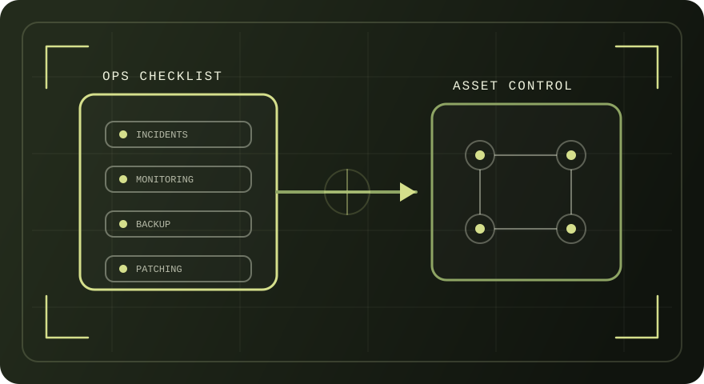

Гражданский системный администратор
Тема страницы: назначение должностной инструкции, требования к квалификации, трудовые функции и типовые обязанности (по профстандарту 06.026 и открытым источникам).
Схема: «функции → документы»
Иллюстрация показывает типовую связь трудовой функции и документации эксплуатации.

Содержание
Быстрый переход по разделам страницы.
- 1. Роль и назначение должностной инструкции
- 2. Нормативная база и источники
- 3. Профстандарт 06.026: цель и структура
- 4. Функциональная карта: обобщенные трудовые функции
- 5. Образование, опыт, условия допуска
- 6. Типовые обязанности системного администратора
- 7. Компетенции и знания (сводная матрица)
- 8. Документы и артефакты работы
- 9. Ответственность и риски (правовая рамка)
1) Роль и назначение должностной инструкции
Положения приведены по разъяснениям Роструда.
В разъяснениях Роструда указывается, что Трудовой кодекс не содержит упоминания должностной инструкции, при этом должностная инструкция рассматривается как документ, определяющий задачи, квалификационные требования, функции, права, обязанности и ответственность работника.
Отдельно отмечается целесообразность разработки инструкции по каждой должности, предусмотренной штатным расписанием (включая вакантные должности).
- Приложение к трудовому договору.
- Отдельно утверждаемый локальный документ работодателя.
- Квалификационные характеристики.
- Единый квалификационный справочник должностей руководителей, специалистов и служащих (как ориентир, указанный в разъяснении).
2) Нормативная база и источники
Ссылки вынесены на страницу «Источники».
- Профессиональный стандарт 06.026 (приказ Минтруда РФ № 680н).
- Разъяснение Роструда по вопросам должностных инструкций (письмо № 3042-6-0).
- Нормы ТК РФ по дисциплинарной и материальной ответственности (выборочно).
- 152‑ФЗ «О персональных данных» (для организаций, обрабатывающих ПДн; выборочно).
3) Профстандарт 06.026: цель и структура
Ключевые фрагменты: цель вида деятельности, уровни квалификации, группы работ.
В профессиональном стандарте фиксируется цель: обеспечение требуемого качественного бесперебойного режима работы инфокоммуникационной системы.
- Технические работы по обслуживанию ИКС — уровень 4.
- Обслуживание ИКС — уровень 5.
- Обслуживание сетевых устройств и серверных ОС — уровень 6.
- Проектирование модернизации ИКС — уровень 7.
- Инциденты: выявление, регистрация, диагностика, устранение.
- Изменения: плановые изменения конфигураций и ПО.
- Учет: инвентаризация и контроль технических и программных средств.
- Надежность: резервное копирование, архивирование, восстановление.
4) Функциональная карта: обобщенные трудовые функции
Таблица составлена по профстандарту 06.026 (наименования и примеры трудовых функций).
| Код | Обобщенная трудовая функция | Уровень | Примеры трудовых функций (выборочно) |
|---|---|---|---|
| A | Технические работы по обслуживанию информационно-коммуникационной системы | 4 | A/01.4 (типовые инциденты), A/03.4 (инвентаризация и учет), A/04.4 (контроль ремонтов/сервисных контрактов). |
| B | Обслуживание информационно-коммуникационной системы | 5 | B/01.5 (инциденты), B/02.5 (обеспечение работы средств), B/03.5 (резервное копирование/архивирование/восстановление), B/05.5 (обновления ПО). |
| C | Обслуживание сетевых устройств информационно-коммуникационной системы | 6 | C/01.6 (сложные инциденты на сетевых устройствах), C/03.6 (планы резервного копирования конфигураций сетевых устройств), C/05.6 (обновления ПО сетевых устройств). |
| D | Обслуживание серверных операционных систем информационно-коммуникационной системы | 6 | D/01.6 (нетипичные инциденты в серверных ОС), D/03.6 (планирование резервного копирования конфигураций серверов и серверных ОС), D/05.6 (обновления ПО серверных ОС). |
| E | Проектирование модернизации информационно-коммуникационной системы | 7 | E/01.7 (оценка требований), E/02.7 (планы модернизации), E/05.7 (требования для закупки), E/06.7 (дизайн ИКС). |
5) Образование, опыт, условия допуска
Требования приведены по профстандарту (по уровням).
- Образование: среднее профессиональное (подготовка квалифицированных рабочих/служащих).
- Опыт: не требуется.
- Пример должности: младший системный администратор (варианты по стандарту).
- Образование: СПО (специалисты среднего звена) или высшее (бакалавриат).
- Опыт: при СПО — не менее 3 месяцев в области техподдержки/администрирования; при высшем — без требований.
- Пример должности: системный администратор (по стандарту).
- Образование: высшее (бакалавриат).
- Опыт: не менее 1 года в области техподдержки/администрирования/программирования устройств ИКС.
- Примеры должностей: ведущий специалист, системный инженер (по стандарту).
- Проектирование модернизации и развитие ИКС.
- Оценка требований, планы модернизации, требования для закупки, дизайн ИКС (по профстандарту).
6) Типовые обязанности системного администратора
Перечень составлен по профстандарту 06.026 и сверке с открытыми примерами должностных инструкций.
- Выявление и устранение инцидентов (регистрация, диагностика, локализация отказов).
- Обеспечение работы технических и программных средств ИКС (контроль отчетов мониторинга, анализ ошибок).
- Резервное копирование/архивирование/восстановление конфигураций и данных по планам работ.
- Обновление программного обеспечения по инструкциям производителей.
- Инвентаризация и учет технических и программных средств с использованием специализированных программ.
- Маркировка технических средств и фиксация места размещения.
- Отчеты по приобретению/расходу компонентов; заявки на комплектующие и ремонт.
- Задание базовых параметров (включая параметры защиты от несанкционированного доступа в объеме, указанном в профстандарте).
- Учет конфигураций и протоколирование событий в пределах регламентов организации.
7) Компетенции и знания (сводная матрица)
Матрица составлена по разделам «необходимые умения/знания» профстандарта.
| Область | Умения и практики (по профстандарту) |
|---|---|
| Инциденты и диагностика | Идентификация и регистрация инцидентов, диагностика согласно инструкции, локализация отказов, инициирование корректирующих действий. |
| ОС и конфигурации | Конфигурирование операционных систем сетевых устройств; методы статической и динамической конфигурации параметров ОС (в объеме задач). |
| Мониторинг и анализ | Мониторинг ИКС; анализ сообщений об ошибках; контроль ежедневных отчетов систем мониторинга; методы контроля производительности. |
| Резервное копирование | Определение точек восстановления; выполнение процедур восстановления; работа с серверами архивирования и средствами управления ОС. |
| Документация и регламенты | Техническая документация, протоколирование событий, работа с нормативно‑технической документацией; регламенты профилактических работ. |
| Технический английский | Чтение технической документации (для ряда функций, указанных в профстандарте). |
| Охрана труда | Требования охраны труда при работе с аппаратными, программно‑аппаратными и программными средствами. |
8) Документы и артефакты работы
Перечень типовых документов, связанных с эксплуатацией и учетом.
- Журналы инвентаризации и учета (оборудование, ПО, конфигурации).
- Отчеты о расходе/приобретении комплектующих, заявки на ремонт.
- Журналы инцидентов (регистрация и классификация).
- Планы резервного копирования/архивирования/восстановления.
- Записи об обновлениях ПО (даты, версии, результаты проверок).
- Документирование настроек и параметров, внесенных по плану работ.
9) Ответственность и риски (правовая рамка)
Раздел фиксирует правовые ориентиры, используемые в гражданской сфере при оценке ответственности.
ТК РФ предусматривает дисциплинарные взыскания и общие правила их применения (выборочно: ст. 192 ТК РФ).
ТК РФ устанавливает материальную ответственность работника за прямой действительный ущерб, причиненный работодателю (выборочно: ст. 238 ТК РФ).
При обработке персональных данных применяются требования 152‑ФЗ, включая меры по обеспечению безопасности персональных данных (выборочно: ст. 19 152‑ФЗ).
Ссылки на нормы вынесены в раздел «Источники».